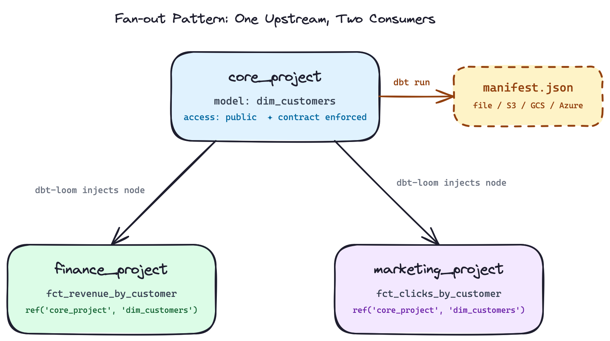
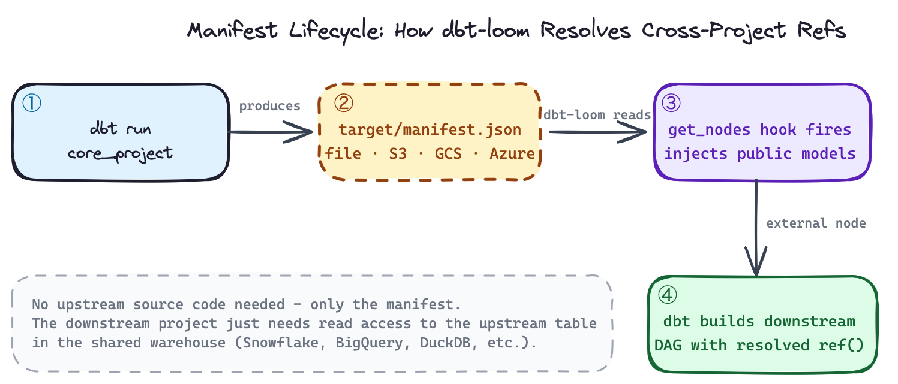
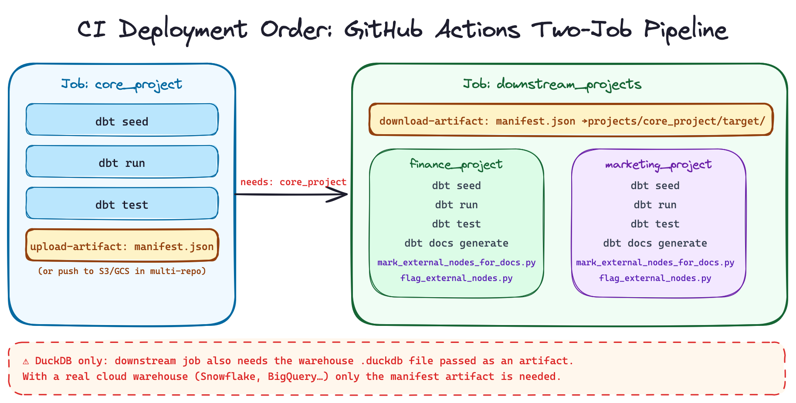

As your dbt project grows, you’ll inevitably hit the wall: a monolithic project with hundreds of models, slow parse times, tangled CI pipelines, and multiple teams stepping on each other’s feet. The natural next question is: should you split this into multiple projects?
And if you do, how do you handle cross-project dependencies without paying for dbt Cloud?
This article walks through the mono repo vs. multi repo decision, then dives into dbt-loom, the open-source plugin that brings dbt Mesh-style cross-project references to dbt Core users. Everything shown here is backed by a working demo repository using dbt Core, DuckDB, and uv (no dbt Cloud account required).
I’ve made a repository in order to illustrate what is described in the article, you can find it here: https://github.com/p-munhoz/dbt-loom-multi-project-demo
The Problem with Monolithic dbt Projects
When a dbt project is small, everything in one repo is perfectly fine. A single dbt run rebuilds the world, lineage is complete, and every model is discoverable by the whole team.
But as the project scales (more teams, more domains, more models) the monolith starts to crack:
- Slow parse times. dbt parses every model on every run, even if you only touched two files.
- Long CI builds. Every PR triggers a full pipeline. Slim CI helps, but the blast radius of any change is hard to control.
- Ownership conflicts. The finance team shouldn’t need to negotiate with the marketing team to merge a model rename.
- Cognitive overload. Finding the “right” model becomes harder when everything lives in one giant DAG.
At some point, splitting into smaller, domain-oriented dbt projects becomes the natural solution. This is exactly what dbt Mesh promotes and what dbt-loom makes accessible without a dbt Cloud subscription.
Mono Repo vs. Multi Repo: What Are We Actually Deciding?
Before diving into tooling, it’s worth being precise about what this choice entails.
A mono repo contains multiple dbt projects in a single Git repository. Teams work in subdirectories. This keeps tooling simple (one CI/CD pipeline, shared linting configs) while enabling project isolation. This is the layout of the demo in this article: core_project, finance_project, and marketing_project all live under a shared projects/ directory.
A multi repo gives each dbt project its own Git repository. Teams are fully autonomous, they have their own CI, their own deployment schedules, their own dependency graph. This is the microservices model applied to data.
The key point: dbt-loom works for both. The mechanism is the same whether the upstream manifest lives at a relative path next door or in an S3 bucket from a completely separate repo. The only thing that changes is where you point the config.
Here’s a practical comparison to guide the decision:
| Mono Repo | Multi Repo | |
|---|---|---|
| Coordination overhead | Low | Higher |
| Team autonomy | Medium | High |
| CI/CD complexity | Simpler | More pipelines to manage |
| Cross-project refs | Easier (same repo) | Requires manifest publishing |
| Access control (Git) | Harder to isolate | Native per-repo |
| Onboarding new teams | Easy | More setup |
Neither is universally better. Your choice should map to your org structure, not the other way around.
What Is dbt Mesh and Why It’s Gated
dbt Labs introduced dbt Mesh as their native answer to multi-project collaboration. The core idea: each dbt project exposes a set of public models that downstream projects can reference with a scoped ref() call. The metadata plumbing between projects is handled by dbt Cloud’s metadata service.
# dependencies.yml - dbt Cloud only
projects:
- name: core_project-- downstream model referencing an upstream public model
select * from {{ ref('core_project', 'dim_customers') }}This is elegant. But it requires dbt Cloud and enterprise pricing that puts it out of reach for many teams. As Nicholas Yager, the author of dbt-loom, stated in the dbt-core GitHub discussions when Labs announced cross-project refs would not be open-sourced: “As a disappointed community member, I have created dbt-loom, an Apache 2-licensed Python package that enables cross-project references in dbt-core.” It quickly became the go-to open-source bridge.
dbt-loom: How It Works Under the Hood
dbt-loom is a dbt Core plugin, a mechanism introduced in dbt Core v1.6 that lets you hook into dbt’s internal node resolution process.
Specifically, dbt-loom implements the get_nodes hook. Every time dbt resolves nodes in your DAG, the plugin intercepts that call, reads a manifest.json from an upstream project, extracts all public models, and injects them as external nodes into your current project’s graph.
The key insight: you don’t need the upstream project’s source code. You only need its manifest.json, the artifact dbt generates on every run describing every node in the project. This is the same contract dbt Cloud uses with its metadata service. dbt-loom replicates it for dbt Core.
dbt run
core_project ──────────────▶ target/manifest.json
dim_customers │
access: public │ file / S3 / GCS / Azure
▼
dbt-loom reads manifest,
finance_project ◀─────── injects dim_customers
ref('core_project', as external node
'dim_customers')
dbt-loom reads manifest,
marketing_project ◀───── injects dim_customers
ref('core_project', as external node
'dim_customers')

This is the fan-out pattern: one upstream project exposes a public model, multiple downstream teams consume it independently. Each downstream project only needs the manifest (not the source code, not access to the upstream repo).
The Demo Setup
The demo repository has this layout:
dbt-loom-multi-project-demo/
├── profiles/
│ └── profiles.yml # env-var-driven DuckDB path for all projects
├── projects/
│ ├── core_project/ # upstream: exposes dim_customers as public
│ ├── finance_project/ # downstream: revenue by customer
│ └── marketing_project/ # downstream: clicks by customer
├── warehouse/
│ └── analytics.duckdb # shared DuckDB file
├── scripts/
│ ├── run_dbt_demo.sh # one-shot end-to-end script
│ ├── mark_external_nodes_for_docs.py
│ └── flag_external_nodes.py
├── .github/workflows/
│ └── dbt-mesh-demo.yml # CI showing two-job deployment order
└── Makefile # per-project targets with enforced ordering
All three projects point to the same DuckDB file in separate schemas (core, finance, marketing), simulating a shared warehouse. Dependencies are managed with uv:
# pyproject.toml
[project]
dependencies = [
"dbt-core",
"dbt-duckdb",
"dbt-loom",
]uv syncThe DuckDB path and manifest path are driven by environment variables, so the repo works out of the box without editing any config files:
# profiles/profiles.yml
core_project:
outputs:
dev:
type: duckdb
path: "{{ env_var('DBT_LOOM_WAREHOUSE_PATH', 'warehouse/analytics.duckdb') }}"
schema: core
threads: 4
target: devThe same env_var() pattern applies to finance_project and marketing_project profiles.
Setting Up dbt-loom Step by Step

1. Declare public models in the upstream project
In core_project/models/schema.yml, mark the models you want to expose downstream:
models:
- name: dim_customers
description: Public customer dimension exposed to downstream projects.
access: public
config:
contract:
enforced: true
columns:
- name: customer_id
data_type: integer
tests:
- not_null
- unique
- name: customer_name
data_type: varchar
- name: customer_tier
data_type: varcharTwo things matter here. access: public is the signal to dbt-loom that this model should be injected into downstream projects. contract: enforced: true makes the column definitions a hard contract, it means that dbt will fail the run if the actual output doesn’t match. Tests on customer_id (not_null, unique) are also defined at the source, not delegated to consumers. This is the right default for anything you expose across team boundaries.
The model itself uses explicit casts to satisfy the contract:
-- core_project/models/dim_customers.sql
select
cast(customer_id as integer) as customer_id,
cast(customer_name as varchar) as customer_name,
cast(customer_tier as varchar) as customer_tier
from {{ ref('customers') }}2. Run the upstream project to produce the manifest
export DBT_PROFILES_DIR=$(pwd)/profiles
export DBT_LOOM_WAREHOUSE_PATH=$(pwd)/warehouse/analytics.duckdb
export CORE_PROJECT_MANIFEST_PATH=$(pwd)/projects/core_project/target/manifest.json
cd projects/core_project
dbt seed # loads customers.csv → core.customers
dbt run # builds core.dim_customers, writes target/manifest.json
dbt test # validates not_null + unique on customer_idAfter this step, core_project/target/manifest.json contains the full node metadata for dim_customers, including its access: public declaration and enforced contract columns. This file is what dbt-loom will read.
3. Configure dbt-loom in each downstream project
Create dbt_loom.config.yml at the root of each downstream project:
# finance_project/dbt_loom.config.yml
manifests:
- name: core_project
type: file
config:
path: $CORE_PROJECT_MANIFEST_PATHThe same config goes into marketing_project/dbt_loom.config.yml. The $CORE_PROJECT_MANIFEST_PATH env var is resolved at runtime by dbt-loom, you set it once and all downstream projects pick it up.
Two things worth knowing here:
Naming gotcha: The config file must be named dbt_loom.config.yml with an underscore, dbt-loom looks for the underscored variant by default. You can override this with the DBT_LOOM_CONFIG environment variable.
No plugin registration needed: There is no plugins: block to add to dbt_project.yml. dbt-loom auto-discovers the config file when it’s present in the project directory. Your dbt_project.yml stays completely clean:
# finance_project/dbt_project.yml
name: finance_project
version: '1.0.0'
config-version: 2
profile: finance_project
model-paths: ["models"]
seed-paths: ["seeds"]
models:
finance_project:
+materialized: table4. Reference upstream public models in downstream projects
The finance project builds revenue by joining orders against the upstream customer dimension:
-- finance_project/models/fct_revenue_by_customer.sql
with customers as (
select * from {{ ref('core_project', 'dim_customers') }}
),
orders as (
select
cast(order_id as integer) as order_id,
cast(customer_id as integer) as customer_id,
cast(amount as double) as amount
from {{ ref('orders') }}
)
select
c.customer_id,
c.customer_name,
c.customer_tier,
sum(o.amount) as total_revenue
from orders o
join customers c on o.customer_id = c.customer_id
group by 1, 2, 3
order by 1The marketing project does the same with campaign click events:
-- marketing_project/models/fct_clicks_by_customer.sql
with customers as (
select * from {{ ref('core_project', 'dim_customers') }}
),
events as (
select
cast(event_id as integer) as event_id,
cast(customer_id as integer) as customer_id,
cast(clicks as integer) as clicks
from {{ ref('campaign_events') }}
)
select
c.customer_id,
c.customer_name,
c.customer_tier,
sum(e.clicks) as total_clicks
from events e
join customers c on e.customer_id = c.customer_id
group by 1, 2, 3
order by 1Both use the exact same ref('core_project', 'dim_customers') syntax. When dbt resolves this, dbt-loom intercepts the node lookup, finds dim_customers in the loaded manifest, and injects it as an external node. dbt then knows its physical location (core.dim_customers in DuckDB) and builds the join correctly without either downstream project having access to core_project’s source code.
5. Run the downstream projects
cd projects/finance_project
dbt seed # loads orders.csv → finance.orders
dbt run # builds finance.fct_revenue_by_customer
dbt test # validates not_null on customer_id
cd ../marketing_project
dbt seed # loads campaign_events.csv → marketing.campaign_events
dbt run # builds marketing.fct_clicks_by_customer
dbt test # validates not_null on customer_idExpected outputs:
finance.fct_revenue_by_customer
| customer_id | customer_name | customer_tier | total_revenue |
|---|---|---|---|
| 1 | Alice | Gold | 200.0 |
| 2 | Bob | Silver | 40.0 |
| 3 | Carol | Gold | 220.0 |
| 4 | David | Bronze | 15.25 |
marketing.fct_clicks_by_customer
| customer_id | customer_name | customer_tier | total_clicks |
|---|---|---|---|
| 1 | Alice | Gold | 7 |
| 2 | Bob | Silver | 4 |
| 3 | Carol | Gold | 10 |
| 4 | David | Bronze | 1 |
Or run everything in one shot:
make demo
# or: scripts/run_dbt_demo.shThe Makefile also exposes per-project targets with enforced ordering, make finance automatically runs make core first:
finance: core # depends on core target
...
marketing: core # depends on core target
...This enforces the correct execution order locally without having to remember it manually.
Manifest Sources: Beyond Local Files
The demo uses a local file path via $CORE_PROJECT_MANIFEST_PATH, the right choice for a mono repo. For production multi-repo setups, you publish the manifest to object storage after each upstream CI run and point the config there instead.
AWS S3:
manifests:
- name: core_project
type: s3
config:
bucket_name: your-dbt-artifacts-bucket
object_name: core_project/manifest.jsonpip install "dbt-loom[s3]"Google Cloud Storage:
manifests:
- name: core_project
type: gcs
config:
project_id: your-gcp-project-id
bucket_name: your-dbt-artifacts-bucket
object_name: core_project/manifest.jsonpip install "dbt-loom[gcs]"Azure Blob Storage:
manifests:
- name: core_project
type: azure
config:
container_name: dbt-artifacts
blob_name: core_project/manifest.jsondbt Cloud (hybrid setup):
manifests:
- name: core_project
type: dbt_cloud
config:
account_id: 12345
job_id: 67890
api_endpoint: https://cloud.getdbt.comdbt-loom also supports gzipped manifests natively, suffix the object name with .gz and it decompresses automatically:
config:
object_name: core_project/manifest.json.gzDeployment: Enforcing Execution Order in CI
The critical operational constraint with dbt-loom is manifest freshness and execution order. The downstream projects must run after the upstream one has completed and published its manifest. This is obvious with one downstream consumer, but becomes a real coordination problem when you have multiple, both finance_project and marketing_project depend on core_project, so core_project must always go first.

The GitHub Actions workflow in the demo makes this explicit with two jobs:
jobs:
core_project:
runs-on: ubuntu-latest
steps:
- uses: actions/checkout@v4
- uses: astral-sh/setup-uv@v5
- run: uv sync
- name: Build core project
env:
DBT_PROFILES_DIR: ${{ github.workspace }}/profiles
DBT_LOOM_WAREHOUSE_PATH: ${{ github.workspace }}/warehouse/analytics.duckdb
run: |
cd projects/core_project
../../.venv/bin/dbt seed
../../.venv/bin/dbt run
../../.venv/bin/dbt test
- name: Publish manifest artifact
uses: actions/upload-artifact@v4
with:
name: core-manifest
path: projects/core_project/target/manifest.json
downstream_projects:
runs-on: ubuntu-latest
needs: core_project # ← enforces execution order
steps:
- uses: actions/checkout@v4
- uses: astral-sh/setup-uv@v5
- run: uv sync
- name: Download core manifest
uses: actions/download-artifact@v4
with:
name: core-manifest
path: projects/core_project/target
- name: Build finance project
env:
DBT_PROFILES_DIR: ${{ github.workspace }}/profiles
DBT_LOOM_WAREHOUSE_PATH: ${{ github.workspace }}/warehouse/analytics.duckdb
CORE_PROJECT_MANIFEST_PATH: ${{ github.workspace }}/projects/core_project/target/manifest.json
run: |
cd projects/finance_project
../../.venv/bin/dbt seed && ../../.venv/bin/dbt run && ../../.venv/bin/dbt test
- name: Build marketing project
env:
DBT_PROFILES_DIR: ${{ github.workspace }}/profiles
DBT_LOOM_WAREHOUSE_PATH: ${{ github.workspace }}/warehouse/analytics.duckdb
CORE_PROJECT_MANIFEST_PATH: ${{ github.workspace }}/projects/core_project/target/manifest.json
run: |
cd projects/marketing_project
../../.venv/bin/dbt seed && ../../.venv/bin/dbt run && ../../.venv/bin/dbt testThe needs: core_project dependency is what enforces the pipeline order. The manifest is transferred between jobs as a GitHub Actions artifact.
One DuckDB-specific caveat worth understanding. In this demo, the downstream job also needs the DuckDB warehouse file to exist because core.dim_customers is a table in that file and the downstream models join against it. In a real production setup with a cloud warehouse (Snowflake, BigQuery, Redshift, etc.), this problem doesn’t exist: the upstream project builds its tables into the warehouse and any downstream project connecting to the same warehouse can query them. DuckDB is a local file, so you’d additionally need to pass the warehouse file as an artifact between CI jobs. The manifest-only transfer is the real pattern, DuckDB just adds a file-system wrinkle.
With Dagster across code locations, you’d model dim_customers as an asset dependency that fct_revenue_by_customer and fct_clicks_by_customer explicitly declare, Dagster then enforces run order and propagates failure signals across projects. With Airflow, an ExternalTaskSensor or TriggerDagRunOperator covers the same need.
The Documentation Limitation and a Workaround
This is the roughest edge of dbt-loom, and it’s worth being direct about it.
When you run dbt docs generate in a downstream project, dbt-loom injects external nodes into the graph but they appear with minimal metadata. In the dbt docs UI, dim_customers shows up as an external model without its description, column docs, or any indication of where it comes from. For a small team this is manageable. At scale it becomes confusing.
The demo includes two Python scripts that address this directly.
mark_external_nodes_for_docs.py patches the target/manifest.json after dbt docs generate runs. It finds every node whose package_name differs from the current project, prefixes its name with [EXTERNAL], adds a [External node injected by dbt-loom] marker to its description, and sets meta.loom_external: true. The result is that external nodes are visually distinguishable in the lineage UI:
dbt docs generate
python scripts/mark_external_nodes_for_docs.py
# → patches finance_project/target/manifest.json in place
# → dim_customers is now named "[EXTERNAL] dim_customers"flag_external_nodes.py generates a post-docs audit report in both JSON and Markdown format:
python scripts/flag_external_nodes.py
# → writes target/external_nodes_report.json
# → writes target/external_nodes_report.mdThe Markdown report looks like:
# External Nodes Report: finance_project
Total external nodes: 1
## By Resource Type
- `model`: 1
## By Package
- `core_project`: 1
## Nodes
| Package | Type | Name | Unique ID |
| core_project | model | dim_customers | model.core_project.dim_customers |
The script also accepts a --fail-on-external flag, which exits with a non-zero status if any external nodes are detected. This is useful in a governance-focused CI check, for example, asserting that a project has no unexpected external dependencies beyond what’s been explicitly approved.
These scripts are workarounds, not solutions. The underlying limitation is a known constraint of dbt’s plugin API: injected nodes are not full ManifestNode objects, so dbt docs generate can’t enrich them the way it would native models. This may improve as the plugin API matures.
Caveats to Know Before Adopting
Plugin API is still beta. The dbt plugin system arrived in v1.6 and is still evolving. Pin your dbt and dbt-loom versions together and test upgrades carefully before rolling them to production.
Manifest freshness is your responsibility. There’s no background metadata service. If the upstream project runs and schema changes but the manifest isn’t republished, downstream projects silently build on stale information. Make manifest publishing a required, non-optional CI step.
Mark manifests as optional during bootstrapping. When standing up a new downstream project before the upstream has ever run, avoid hard failures:
manifests:
- name: core_project
type: file
config:
path: $CORE_PROJECT_MANIFEST_PATH
optional: trueExclude upstream packages from injection. If your upstream project uses dbt_project_evaluator or similar, you don’t want those nodes leaking into your downstream graph:
manifests:
- name: core_project
type: s3
config:
bucket_name: your-bucket
object_name: manifest.json
excluded_packages:
- dbt_project_evaluatorWhen to Use dbt-loom vs. When to Consider dbt Cloud Mesh
Use dbt-loom if:
- You’re on dbt Core and want multi-project references without a Cloud migration
- Your team is comfortable owning manifest publishing in CI
- You have a small-to-medium number of upstream projects (roughly 1–4)
- You want to validate dbt Mesh patterns before committing to them at scale
Consider dbt Cloud Mesh if:
- You need first-class cross-project lineage in a shared UI
- You want environment-aware ref resolution (staging refs staging, prod refs prod) handled automatically
- You have many interdependent projects and manifest management is becoming a coordination burden
- You need model versioning and access policy governance at scale
Wrapping Up
The mono repo vs. multi repo question isn’t primarily a tooling question, it’s more about team ownership boundaries. If your data teams are becoming meaningfully independent, splitting dbt projects along domain lines is a sound architectural move regardless of which repo strategy you adopt.
dbt-loom makes that move accessible without a Cloud contract. The mechanism is clean: upstream projects run and publish a manifest.json, downstream projects consume it and reference public models with the exact same ref() syntax dbt Cloud Mesh uses. No source code sharing, no tight coupling, just metadata.
The fan-out pattern in the demo (one core_project feeding both finance_project and marketing_project) is the topology you’ll encounter most often in practice. Get the execution order right (upstream first, always), enforce public model contracts, keep your manifests fresh, and you have a working open-source data mesh.
The docs limitation is real but manageable with the patching scripts in the demo. If rich cross-project lineage in a shared UI is a hard requirement for your team, that’s probably the clearest signal to look at dbt Cloud Mesh seriously.